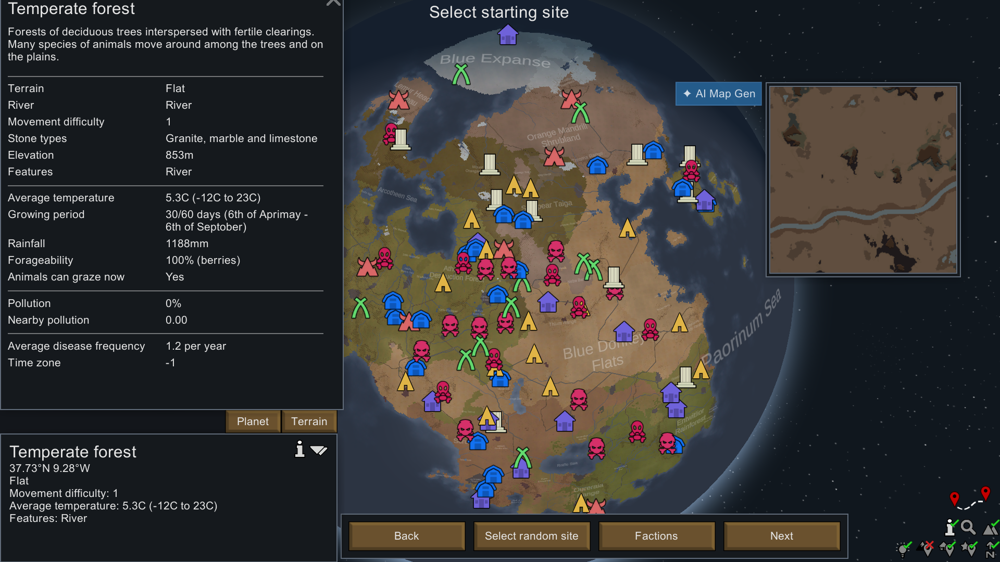
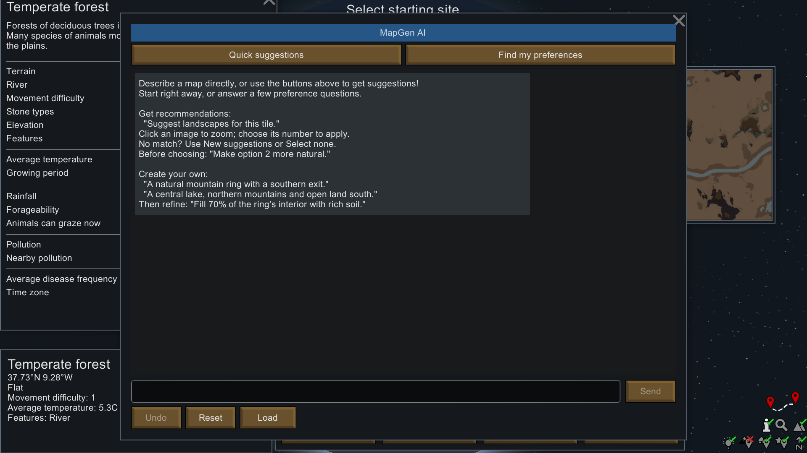

2026년 9월 30일 · MapGen AI
툴바를 꺼도
맵 만들기 버튼이 보입니다
v1.7.2 창작마당 반영 완료. 일반 설치본·구독본·배포 파일을 새 패키지와 대조했습니다. 창작마당 항목 ID는 3685385453입니다.
이번 설치본에서 확인한 화면
새 식민지의 시작 지점을 고르는 화면입니다. Map Preview 툴바를 끈 상태에서도 파란 AI Map Gen 버튼이 미리보기 왼쪽에 표시됩니다. 그림을 누르면 원본 크기로 볼 수 있습니다.

이번에 설치한 v1.7.2 DLL로 실제 게임에서 촬영했습니다.

버튼에 자동 클릭 이벤트를 전달한 뒤 대화창이 열렸습니다. 물리 마우스·다른 모드의 입력 처리는 이 검사에 포함하지 않았습니다.
확인 결과
| 항목 | 결과 |
|---|
| 일반 설치본·구독본·저장소 배포 파일 | 패키지 9개 파일과 일치 |
| 창작마당 업로드 | Steam 성공 응답 + 공개 API + 구독 파일 확인 |
| 변경 기록 | v1.7.2 버튼 수정 내용 등록 |
| 시작 화면·툴바 끔 | 버튼 표시·대화창 열기 확인 |
| 유료 AI 호출 | 이번 작업 0회 |
이전 Claude 검사는 자동 테스트 337개와 시작 화면/플레이 화면의 툴바 켬·끔을 확인했습니다. 이번에는 동일한 설치 DLL을 사용해 시작 화면·툴바 끔을 새로 확인했습니다. 실제 마우스, 다른 해상도·UI 배율, 미리보기 창을 옮긴 상황은 추가 확인이 필요합니다.
이번 공개판에는 DEV의 프롬프트 비용 압축이 들어가지 않습니다. 강 위치 변경·특징 교체 관련 남은 문제도 별도 작업입니다.
창작마당 수정 기록 · 상세 검증 기록 · 파일 대조 영수증